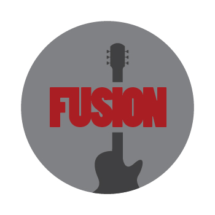

<nav class="navbar">
  <a class="navbar-brand" routerLink="/">
    
  </a>

  <button
    class="navbar-toggler"
    type="button"
    data-bs-toggle="collapse"
    data-bs-target="#navbarNavAltMarkup"
    aria-controls="navbarNavAltMarkup"
    aria-expanded="false"
    aria-label="Toggle navigation"
  >
    <span class="navbar-toggler-icon"></span>
  </button>

  <div class="collapse navbar-collapse" id="navbarNavAltMarkup">
    <div class="navbar-nav">
      <a
        class="nav-link"
        routerLink="/"
        routerLinkActive="active"
        [routerLinkActiveOptions]="{ exact: true }"
        >Home</a
      >
      <a class="nav-link" routerLink="/faq" routerLinkActive="active">FAQ</a>
      <a class="nav-link" routerLink="/setlist" routerLinkActive="active">Setlist</a>
    </div>
  </div>
</nav>
